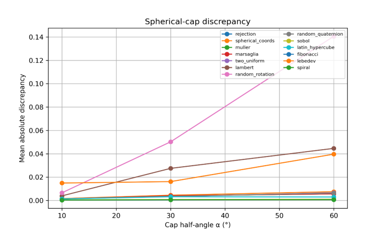
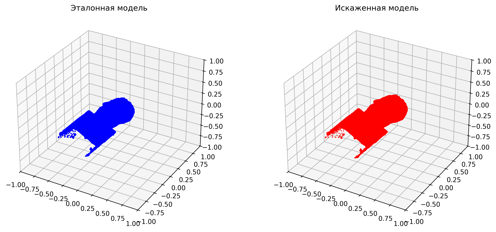
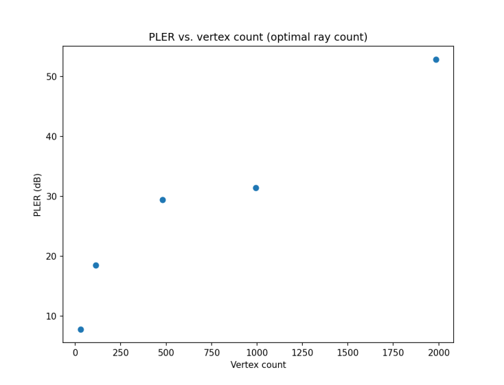

Problem
Chamfer and Hausdorff distances often diverge from how distortion is perceived on meshes used in XR and media pipelines. Earlier 2D-oriented quality models also transfer poorly to 3D content.
“The original PLER metric… suffered from non-uniform ray distribution. … The Fibonacci (golden) spiral method was identified as optimal, leading to the development of PLER-2.0.”
Approach
Reference and test models are enclosed in a sphere. Rays are cast from surface samples toward the center; hit-length differences yield an MSE that is mapped to a logarithmic PLER score — scale-adaptive via the sphere radius, with selective sensitivity in the low-quality region.
PLER 2.0 upgrades sampling to a Fibonacci spiral so rays cover the surface evenly. The public library adds topology descriptors and an optional MOS regressor for research batches.
Results
- Uniform sphere sampling study → Fibonacci spiral selected for PLER 2.0
- Cache acceleration up to ~1.8–3.7× on repeat local runs
- Open3D / Trimesh pipeline; cross-check bench in 3D Quality Bench
Non-commercial research license. Commercial use requires written permission.